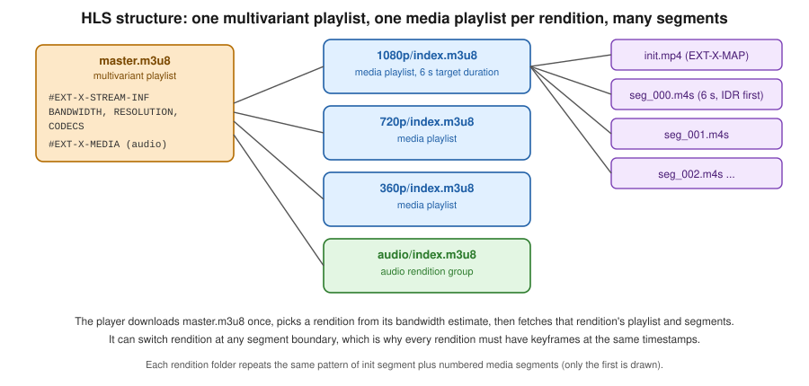

Video Streaming: HLS, DASH and CMAF
|
This content was generated with the assistance of AI and should be verified against the official documentation before being relied on in production. |
Baseline date: 2026-10-07. Once a video has been encoded into a ladder of renditions, a player has to be able to choose between them while the video plays. That is what adaptive bitrate (ABR) streaming does, and it is done by splitting each rendition into short segments and publishing a playlist that lists them.
Progressive download versus adaptive streaming
- Progressive download
-
One MP4 served over HTTP, with
faststartso the index is at the start. The browser starts playing early and uses range requests to seek. It is simple, it works behind any CDN, and it is a good fit for short clips and for a single rendition. It cannot change quality mid-playback, so a viewer on a slow link stalls, and a viewer on a fast link is stuck at the one quality you chose. - Adaptive streaming
-
Several renditions, each cut into segments of a few seconds, plus manifests. The player measures throughput and buffer level and picks the best rendition for each segment, so it can step down before it stalls. Use it for anything longer than a minute or two, for mixed audiences, and for live.
HLS, DASH and CMAF
| HLS | DASH | |
|---|---|---|
Specification |
RFC 8216 and the later HLS draft, maintained by Apple. |
ISO/IEC 23009-1, summarised by the DASH Industry Forum. |
Manifest |
Text playlists: a multivariant playlist ( |
One XML file ( |
Segments |
MPEG-TS or fMP4. |
fMP4 (and WebM). |
Native support |
Safari, iOS, tvOS, many TVs. Other browsers use hls.js. |
No native support in browsers. Played with dash.js or Shaka Player over Media Source Extensions. |
CMAF (Common Media Application Format) is a restricted form of fragmented MP4. When segments are CMAF, one set of media files can be described by both an HLS and a DASH manifest, so you store and cache the media once. In practice a platform that wants maximum reach produces fMP4 segments, an HLS playlist, and a DASH manifest over the same files. Encrypted CMAF needs the same encryption mode for both (see the DRM note below).
Segment length
Apple’s HLS Authoring Specification recommends a target duration of 6 seconds and segments that start with an IDR frame, with media segments not exceeding the target duration by more than half a second. Shorter segments (2 to 4 seconds) lower start-up and switching latency and raise overhead and request count. Longer ones reduce overhead and slow adaptation. A keyframe every two seconds with six-second segments gives three keyframes per segment, and the switch points line up in every rendition only if the keyframe interval is fixed, see the GOP note in encoding fundamentals.
Playlists

The multivariant playlist (called the master playlist in older text) lists the renditions. The sample below is hand-written to show every attribute; the tools write a subset, see the worked example further down for real output:
#EXTM3U
#EXT-X-VERSION:7
#EXT-X-INDEPENDENT-SEGMENTS
#EXT-X-STREAM-INF:BANDWIDTH=3300000,AVERAGE-BANDWIDTH=3000000,RESOLUTION=1280x720,CODECS="avc1.64001f,mp4a.40.2",FRAME-RATE=24
720p/index.m3u8
#EXT-X-STREAM-INF:BANDWIDTH=7200000,AVERAGE-BANDWIDTH=6000000,RESOLUTION=1920x1080,CODECS="avc1.640028,mp4a.40.2",FRAME-RATE=24
1080p/index.m3u8Each EXT-X-STREAM-INF gives the peak BANDWIDTH, the AVERAGE-BANDWIDTH, the resolution and the codecs. A
media playlist lists the segments of one rendition:
#EXTM3U
#EXT-X-VERSION:7
#EXT-X-TARGETDURATION:6
#EXT-X-PLAYLIST-TYPE:VOD
#EXT-X-MAP:URI="init.mp4"
#EXTINF:6.000,
seg_000.m4s
#EXTINF:6.000,
seg_001.m4s
#EXT-X-ENDLISTSegments can be separate files (simple to cache and to debug, many objects) or byte ranges of a single file (the
playlist uses EXT-X-BYTERANGE, so there is one object per rendition, fewer requests to the origin, and CDN caching works
per range). Separate files are the safer default.
A DASH manifest expresses the same thing as an XML tree of Period, AdaptationSet (video, audio), Representation
(one rendition) and a SegmentTemplate that gives the segment URL pattern.
Producing HLS and DASH with FFmpeg
FFmpeg has hls and dash
muxers. Check the option names against the documentation of the FFmpeg build you use. The commands below were run against FFmpeg 9.0.2 (the linuxserver/ffmpeg Docker image), and the packager command against
Shaka Packager 3.9.3.
# Single-rendition HLS with fMP4 segments, 6 second target, keyframe every 2 seconds at any frame rate.
# The output directory must exist: the muxer creates files but not directories.
mkdir -p 720p
ffmpeg -i input.mp4 -c:v libx264 -preset slow -crf 22 -force_key_frames "expr:gte(t,n_forced*2)" -sc_threshold 0 \
-c:a aac -b:a 128k \
-f hls -hls_time 6 -hls_playlist_type vod -hls_segment_type fmp4 \
-hls_fmp4_init_filename init.mp4 -hls_segment_filename "720p/seg_%03d.m4s" 720p/index.m3u8
# Several renditions in one go, with a generated multivariant playlist.
ffmpeg -i input.mp4 \
-filter_complex "[0:v]split=2[v1][v2];[v1]scale=-2:1080[v1o];[v2]scale=-2:720[v2o]" \
-map "[v1o]" -map "[v2o]" -map 0:a -map 0:a \
-c:v libx264 -preset slow -crf 22 -force_key_frames "expr:gte(t,n_forced*2)" -sc_threshold 0 -c:a aac -b:a 128k \
-f hls -hls_time 6 -hls_playlist_type vod -hls_segment_type fmp4 \
-var_stream_map "v:0,a:0 v:1,a:1" -master_pl_name master.m3u8 \
-hls_segment_filename "stream_%v/seg_%03d.m4s" "stream_%v/index.m3u8"
# DASH (MPD plus fMP4 segments).
ffmpeg -i input.mp4 -c:v libx264 -crf 22 -force_key_frames "expr:gte(t,n_forced*2)" -sc_threshold 0 -c:a aac -b:a 128k \
-f dash -seg_duration 6 -use_template 1 -use_timeline 1 manifest.mpdThe init segment is written next to the playlist, with the name given by -hls_fmp4_init_filename (without that option the
muxer names it init.mp4, and init_0.mp4, init_1.mp4 and so on when -var_stream_map produces several playlists). The
generated multivariant playlist carries BANDWIDTH, AVERAGE-BANDWIDTH, RESOLUTION and CODECS for each variant, and has no
FRAME-RATE and no EXT-X-INDEPENDENT-SEGMENTS unless you add -hls_flags independent_segments. The DASH muxer writes video
and audio as two adaptation sets, with segment files named chunk-stream0-00001.m4s and initialisation segments named
init-stream0.m4s.
FFmpeg is a good start for small catalogues. For production-grade packaging, with DRM, with several audio languages and subtitles, with a CMAF output shared between HLS and DASH, use a dedicated packager.
Shaka Packager and Bento4
Shaka Packager takes encoded MP4 or WebM files and produces HLS and
DASH with shared fMP4 segments, and applies encryption for DRM. Bento4 offers a similar set of
command-line tools (mp4fragment, mp4dash, mp4hls).
# video-only renditions (1080p.mp4, 720p.mp4, 360p.mp4) and one audio file (audio.m4a)
packager \
'in=720p.mp4,stream=video,init_segment=720p/init.mp4,segment_template=720p/seg_$Number$.m4s,playlist_name=720p/index.m3u8' \
'in=1080p.mp4,stream=video,init_segment=1080p/init.mp4,segment_template=1080p/seg_$Number$.m4s,playlist_name=1080p/index.m3u8' \
'in=360p.mp4,stream=video,init_segment=360p/init.mp4,segment_template=360p/seg_$Number$.m4s,playlist_name=360p/index.m3u8' \
'in=audio.m4a,stream=audio,init_segment=audio/init.mp4,segment_template=audio/seg_$Number$.m4s,playlist_name=audio/index.m3u8,hls_group_id=audio,hls_name=main' \
--segment_duration 6 \
--hls_master_playlist_output master.m3u8 \
--mpd_output manifest.mpdEach in= descriptor selects one stream of one input, so stream=audio fails with "stream=audio not available" when the
input file has no audio track. Create the output directories first, as with FFmpeg. Segment numbers start at 1
(seg_1.m4s), unlike the zero-padded names of FFmpeg.
The packager works on already-encoded files, so keep encoding and packaging as two steps of the same job. Managed services do both: see AWS streaming and delivery and Google Cloud Transcoder API.
Worked example: the Bookshelf trailer, packaged
The renditions are the three rungs produced in encoding fundamentals (1080p, 720p and 360p, video only, a keyframe every 2 seconds) plus one AAC file, from the same 20 second trailer. Packaging has to preserve the one property that makes switching possible, which is that every rendition is cut at the same instants:
Shaka Packager produced the following tree from the command above, and the HLS and DASH manifests point at the same segment files, so the media is stored and cached once:
1080p/init.mp4 1080p/seg_1.m4s ... seg_4.m4s 1080p/index.m3u8
720p/... 360p/... audio/...
master.m3u8
manifest.mpd#EXTM3U
#EXT-X-INDEPENDENT-SEGMENTS
#EXT-X-MEDIA:TYPE=AUDIO,URI="audio/index.m3u8",GROUP-ID="audio",NAME="main",DEFAULT=NO,AUTOSELECT=YES,CHANNELS="1"
#EXT-X-STREAM-INF:BANDWIDTH=3104368,AVERAGE-BANDWIDTH=2245541,CODECS="avc1.64001f,mp4a.40.2",RESOLUTION=1280x720,FRAME-RATE=24.000,AUDIO="audio",CLOSED-CAPTIONS=NONE
720p/index.m3u8
#EXT-X-STREAM-INF:BANDWIDTH=6540771,AVERAGE-BANDWIDTH=5717823,CODECS="avc1.640032,mp4a.40.2",RESOLUTION=1920x1080,FRAME-RATE=24.000,AUDIO="audio",CLOSED-CAPTIONS=NONE
1080p/index.m3u8
#EXT-X-STREAM-INF:BANDWIDTH=791834,AVERAGE-BANDWIDTH=565069,CODECS="avc1.64001e,mp4a.40.2",RESOLUTION=640x360,FRAME-RATE=24.000,AUDIO="audio",CLOSED-CAPTIONS=NONE
360p/index.m3u8The audio is its own rendition in an EXT-X-MEDIA group, and every video variant names that group, so the player downloads the
audio once whichever video rung it plays. In the DASH manifest the three video rungs are the three Representation elements of
one AdaptationSet, each with a SegmentTemplate such as 720p/seg_$Number$.m4s and a SegmentTimeline of
S t="0" d="73728" r="2" followed by S d="24576" in a 12288 Hz timescale, which is three segments of 6 seconds and one of 2.
Where the segment boundaries come from
A segment can only start on a keyframe, so -hls_time 6 is a request, not a promise. The FFmpeg HLS muxer closes a segment at
the first keyframe at or after the target duration. The same 20 second trailer with three different keyframe settings:
| Encoder settings | Segment durations | Why |
|---|---|---|
|
6, 6, 6 and 2 seconds, |
A keyframe every 2 seconds, so the cut at 6 seconds always lands on one. |
|
6, 6, 6 and 2 seconds for this clip |
The scene cut at 10 seconds happened to fall on a planned keyframe. A cut elsewhere would add an extra keyframe and shift the next segment boundary in this rendition only. |
No keyframe options (the x264 default of 250 frames) |
10 and 10 seconds, |
The first keyframe after 6 seconds was the scene cut at 10 seconds, so the segments are far longer than requested. |
The last row is the usual cause of "my segments are 10 seconds long and the player takes ages to switch". If the renditions are encoded separately, as in a ladder, the same settings must be given to every encode, or the segment boundaries differ between renditions and a player switching at a boundary shows a glitch or a gap. After packaging, check that the media playlists agree:
diff <(grep EXTINF 1080p/index.m3u8) <(grep EXTINF 360p/index.m3u8) && echo "video renditions aligned"For the trailer this prints video renditions aligned. The audio playlist differs slightly (6.014, 5.991, 6.014 and 1.981
seconds) because AAC frames are 1024 samples long and the audio segments end on frame boundaries, which is normal and does not
break switching.
Segment size and start-up time
Segment duration also sets how long the first download takes. The first 6 second segments of the trailer weigh 3.69 MB at 1080p, 1.14 MB at 720p and 0.24 MB at 360p. On a connection that delivers 5 Mbit/s the first segment takes:
| Rung | First segment, 6 s | Time at 5 Mbit/s | Time with 2 s segments |
|---|---|---|---|
1080p |
3.69 MB |
5.9 s |
about 2 s |
720p |
1.14 MB |
1.8 s |
about 0.6 s |
360p |
0.24 MB |
0.4 s |
about 0.1 s |
That is why players start on a middle rung, why the default variant in Apple’s guidance is the 2000 kbit/s one, and why a 1080p start on an average connection stalls. Two-second segments cut the start-up cost to a third, and triple the number of requests: a two-hour film is 1200 segments per rendition with 6 second segments and 3600 with 2 second ones, each with its own CDN lookup and HTTP overhead. Keep 6 seconds for long-form video served from a CDN, and consider 2 to 4 seconds only for short clips and for live.
CDN delivery, signed URLs and cookies
-
Serve playlists and segments from a CDN, with the segments cached for a long time (they never change) and the playlists cached briefly for live and for a long time for VOD with
EXT-X-ENDLIST. -
Use the right
Content-Typefor each file. Apple listsapplication/vnd.apple.mpegurlfor.m3u8andvideo/mp4orvideo/iso.segmentfor fMP4. Misconfigured types are a frequent cause of "plays in Safari only". -
Enable CORS for the player’s origin, since hls.js and dash.js fetch with XHR or fetch, see video playback on the web.
-
For private video, signed URLs protect one object. They do not suit streaming, because a playlist references many segment URLs relative to itself and each would need its own signature. Signed cookies (or a token in the path, or a policy that covers a prefix) authorise a whole prefix such as
/videos/<id>/*for a limited time, which is what HLS and DASH need. CloudFront, Google Media CDN and Azure Front Door all offer one of these, see AWS streaming and delivery.
The three rules of the list above, written as an nginx server block and checked with curl -I against the packaged trailer:
types {
application/vnd.apple.mpegurl m3u8;
application/dash+xml mpd;
video/iso.segment m4s;
video/mp4 mp4;
}
server {
listen 80;
root /srv/videos;
location ~ \.(m3u8|mpd)$ {
add_header Cache-Control "public, max-age=60"; # short: a playlist may still change
add_header Access-Control-Allow-Origin "https://app.example.com" always;
}
location ~ \.(m4s|mp4)$ {
add_header Cache-Control "public, max-age=31536000, immutable"; # segments never change
add_header Access-Control-Allow-Origin "https://app.example.com" always;
add_header Access-Control-Expose-Headers "Content-Length, Content-Range" always;
}
}The responses were application/vnd.apple.mpegurl for master.m3u8, application/dash+xml for manifest.mpd,
video/iso.segment for seg_1.m4s and video/mp4 for init.mp4, each with the matching Cache-Control. A request with
Range: bytes=0-99 returned 206 Partial Content with Content-Range: bytes 0-99/1135180, so seeking and byte-range
playlists work on a plain static server. Redefining types replaces the defaults for that block, so list every extension the
location serves.
A note on DRM
Signed access stops casual sharing of links. It does not stop a viewer from saving the video. DRM (Widevine, FairPlay, PlayReady) encrypts the media and releases keys through a licence server only to approved players. Common encryption (CENC) lets one encrypted CMAF file serve Widevine and PlayReady, and FairPlay uses its own HLS key delivery, so a platform that needs all three plans for an encryption mode that suits each and for a licence service. Packagers such as Shaka Packager and managed services support this. For most platforms, unencrypted ABR with signed cookies is enough.